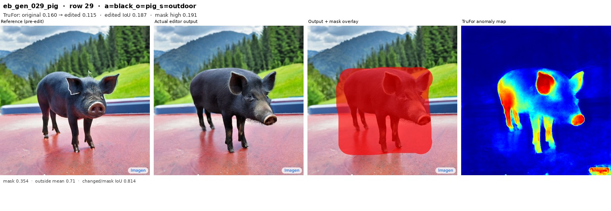
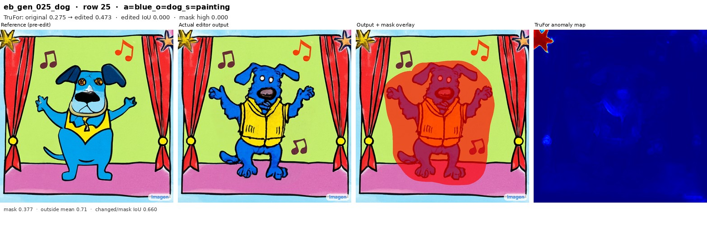
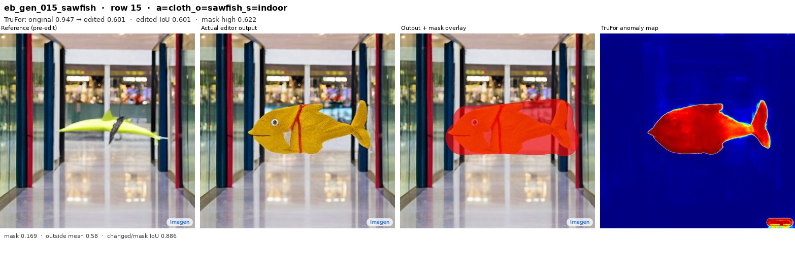
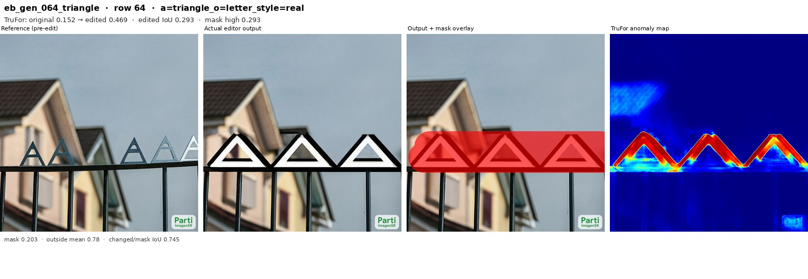
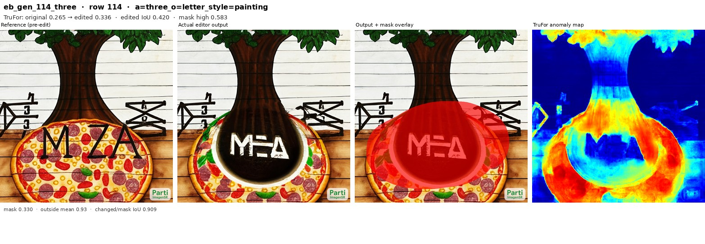

EditBench 5 对 — TruFor 代表热图
reference / actual editor output / mask overlay / TruFor anomaly map；
低分但热图覆盖：eb_gen_029_pig、eb_gen_064_triangle、eb_gen_114_three。
eb_gen_114_three 的原图同区域已是高响应，不能单独作为本次编辑证据。
eb_gen_029_pig
row 29 · color/common/outdoor ·
original 0.160 → edited 0.115 ·
edited IoU 0.187 · mask high 0.191

eb_gen_025_dog
row 25 · color/common/painting ·
original 0.275 → edited 0.473 ·
edited IoU 0.000 · mask high 0.000

eb_gen_015_sawfish
row 15 · material/uncommon/indoor ·
original 0.947 → edited 0.601 ·
edited IoU 0.601 · mask high 0.622

eb_gen_064_triangle
row 64 · shape/writing/real ·
original 0.152 → edited 0.469 ·
edited IoU 0.293 · mask high 0.293

eb_gen_114_three
row 114 · count/writing/painting ·
original 0.265 → edited 0.336 ·
edited IoU 0.420 · mask high 0.583
